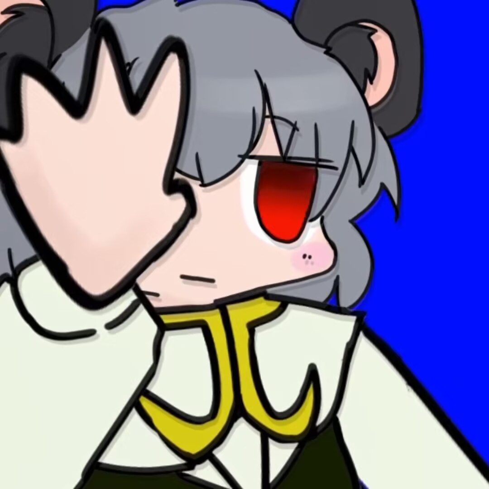
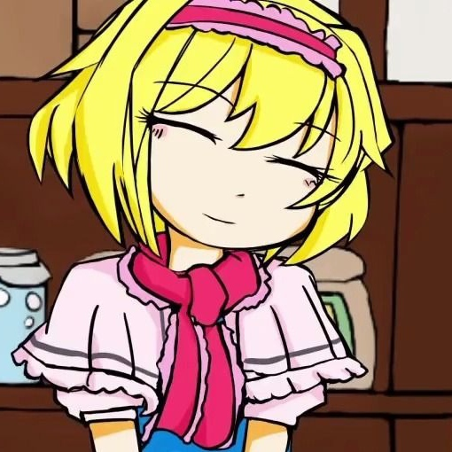

有能与###媲美的神级棒读，声音有迷之中毒性。因极其脱力感的声音及独特的演技得到了不少人的关注。为娜兹琳配音也是出于本人的希望。原本只是作为画师参与制作，后来在###实在找不到声优的时候主动提出参与配音。
而在曲奇创作中，其凭借独特的角色定位和泛用的语录获得了一席之地，人气稳步上升，最终在***年伴随着###热潮迎来了长久的创作热潮。
现如今，其人气已经比肩甚至超越了###和###等老牌角色，以至于在一些非相关领域也能见到对其的大肆讨论。

无论配音还是平时说话总是轻声，给人一种病气少女的感觉。但根据%$#企画的回答来看，本人应该是个平时喜欢看书的文学少女。
平时活动较少，大部分是朗读文章之类的投稿。参加过其他声剧以及%$#企画。随着$#%的关闭，活动也越来越少。
受%$&发布后对她的采访及其推特名称的影响，"kofji姊贵"的名称写法成为主流。该声剧中她的名称显示为"Kofji"，于是就有了"Kofji姊贵"的名称变体。
然而刻意区分大小写的现象并没有在niconico发生。
其在2017/07/16接近七点时在#$%发布&$#，让所有人都能自由进入然后随意涂鸦一点东西。参加的大部分是日本的&#%，主催$#%，以及本人也有参加其中。
造型特点是偏橙色的短发，太眉，褐色的前挂以及红黑配色的衣服。设计的原型是&$#。
唱功中等偏上。画比较可爱。在本篇和推上的朗诵／读台本的音声表现出呆呆懒懒，又像小孩子的声线，和%$#一样被称为&^%，在一些BB剧场中作为$#@的妹妹登场。
配音前&$#似乎没有说明声剧的危险性。与偏向少年的语气相反，###，配音滑舌较为严重。
冬はつとめて。雪の降りたるはいふべきにもあらず、霜のいとしろきも、またさらでもいと寒きに、火などいそぎおこして、炭もてわたるもいとつきづきし、昼になりて、ぬるくゆるびもていけば、火桶の火もしろき灰がちになりてわろし。
冬天来了。 当雪落下时，霜冻，火被烧毁，木炭被烧毁，当太阳来临时，如果它不温不火松散，火桶里的火就会燃烧和灰烬。
与%$#一同出现，造型特点是长长的衣袖以及奇怪的脸。据说原型是&*%，然而看不出和$#@有丝毫联系……
尤其在静画中被塑造成妖物的形象，身长可随意延展，称为“ばけものゆうひぃ”（怪物YUH），元凶是tenten投稿的ばけものゆうひぃ* 静画（右图）。虽然变形程度因人而异，但大多都是给人精神压力的作品。
另外，在饼☆讨论串（本スレ）中就有饼民预言YUH可能会被画成妖怪。